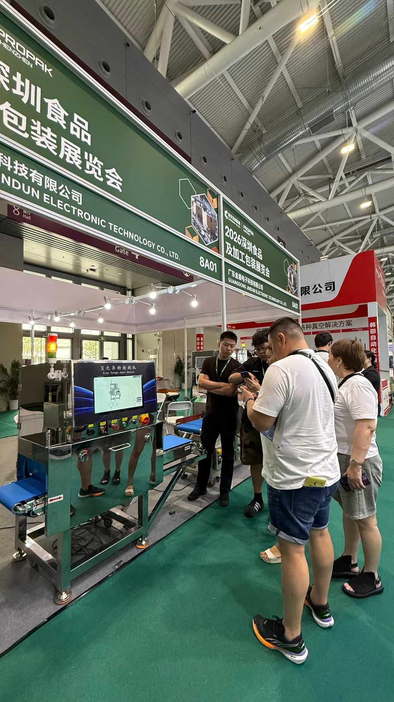
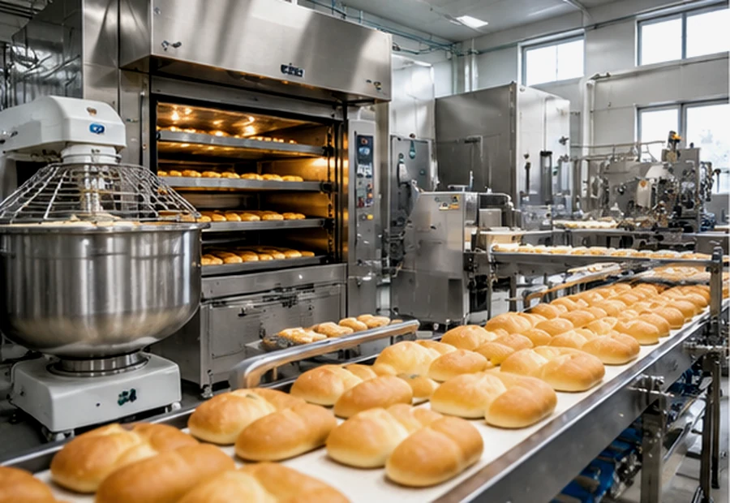
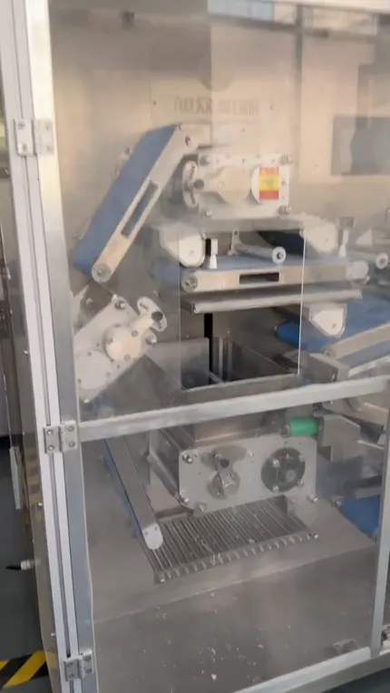

01 / НАБЛЮДЕНИЕ
Оборудование в процессе
Просим показать цикл на сравнимом продукте — от подачи сырья до результата.
Фото из поездки · ASTARФасовка, дозирование и упаковка, оборудование для полуфабрикатов, овощеподготовки, мясопереработки и пекарен. Уточняем варианты у производителей и согласовываем условия поставки под проект.
Нужно выяснить, что получится на вашем сырье, что входит в комплект, как чистить машину и кто поможет с настройкой. Эти вопросы обсуждаем с производителем до заказа.
Просим показать цикл на сравнимом продукте — от подачи сырья до результата.
Фото из поездки · ASTAR
Уточняем условия, при которых достигаются скорость, точность и выход годной продукции.
Фото из поездки · Xuzhong
Сопоставляем требования к персоналу, расходникам, обслуживанию и запуску.
Фото с выставки · ШэньчжэньЭто фотографии из поездок DARKHANTECH. Подбор, испытания, гарантию и сервис обсуждаем применительно к конкретной машине и условиям проекта; сам факт визита не означает подтверждённую поставку.
Два первых разбора подготовлены по задачам, упомянутым в маркетинговом аудите; третий — учебный сценарий. Без названий клиентов, непроверенных результатов и заявлений о завершённой поставке.
Пример параметров для подбора: изделия 8–12 г, тонкое тесто и заданная структура начинки. Комплектацию и производительность определяем под конкретный продукт.
Расскажите, что производите и в каких объёмах. Покажем подходящие варианты машин и объясним различия.
 01 / НАПРАВЛЕНИЕФасовка, упаковка и дозированиеДозаторы, запайщики лотков, упаковочные линииСмотреть оборудование ↗
01 / НАПРАВЛЕНИЕФасовка, упаковка и дозированиеДозаторы, запайщики лотков, упаковочные линииСмотреть оборудование ↗ 02 / НАПРАВЛЕНИЕОборудование для полуфабрикатовПельмени, буузы, манты, котлеты и тестораскаткиСмотреть оборудование ↗03 / НАПРАВЛЕНИЕОвощеподготовкаМойка, очистка, нарезка и подготовка сырьяСмотреть оборудование ↗
02 / НАПРАВЛЕНИЕОборудование для полуфабрикатовПельмени, буузы, манты, котлеты и тестораскаткиСмотреть оборудование ↗03 / НАПРАВЛЕНИЕОвощеподготовкаМойка, очистка, нарезка и подготовка сырьяСмотреть оборудование ↗ 04 / НАПРАВЛЕНИЕМясопереработкаМясорубки, фаршемесы, измельчение и формовкаСмотреть оборудование ↗
04 / НАПРАВЛЕНИЕМясопереработкаМясорубки, фаршемесы, измельчение и формовкаСмотреть оборудование ↗
05 / НАПРАВЛЕНИЕПекарни и кондитерскиеТестомесы, раскатки, печи и формовкаСмотреть оборудование ↗06 / НАПРАВЛЕНИЕГотовая еда и фабрики-кухниВарка, подготовка, фасовка готовых блюдСмотреть оборудование ↗Комплексные производственные линии — по индивидуальному запросу.
Рассматриваете оборудование Xuzhong? Расскажите, что хотите производить. Поможем обсудить с заводом подходящую модель, характеристики и условия поставки.

Показываем видеозаписи машин, заводские стенды и две модели по опубликованным материалам производителя.
Укажите данные вашего цеха и оцените возможный экономический эффект, дополнительный выпуск и ориентировочный срок окупаемости.
Предварительный расчёт по вашим данным, а не гарантия экономии или срока окупаемости. Результат зависит от фактической загрузки, расходов, спроса и условий внедрения.
Важно заранее посчитать не только цену машины, но и доставку, оформление, необходимую комплектацию и помощь с запуском, если она требуется.
Согласованная комплектация оборудования, опции и условия проекта.
Испытания, документы и подтверждение параметров.
Логистика, таможня, страховка и условия поставки.
Монтаж, обучение, запчасти — по согласованному объёму.
Что производите, какой объём нужен и что хотите улучшить? Начнём с разговора о продукте и подберём вопросы к производителям.
 Тестораскаточная машина HL MT300G
Тестораскаточная машина HL MT300G